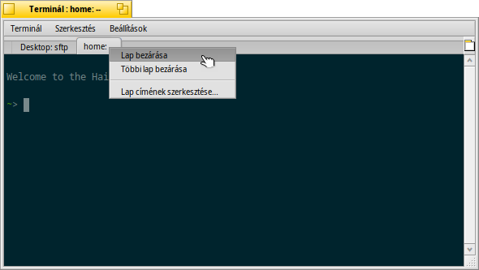
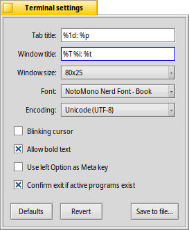

| Index |
|
Windows and tabs Settings Colors Keyboard shortcuts Hints for working with the Terminal Bash customization |
 Terminál (Terminal)
Terminál (Terminal)
| Asztalsáv: | ||
| Útvonal: | /boot/system/apps/Terminal | |
| Beállítások: | ~/config/settings/Terminal ~/config/settings/profile - a /boot/system/settings/etc/profile fájl kibővítése/felülírása ~/config/settings/inputrc - a /boot/system/settings/etc/inputrc fájl kibővítése/felülírása |
The Terminal is Haiku's interface to the shell, by default that's bash, the Bourne Again Shell.
Ehhez kapcsolódik a Bash és szkriptek (néhány internet hivatkozás, leírások) és a Haiku-specifikus parancssori programok témakör. Itt most csak magára, a Terminálra koncentrálunk.
 Ablakok és lapok
Ablakok és lapok
You can open as many Terminals as needed, either each in its own window by simply launching more Terminals or with ALT N from an already running Terminal. Or you use Terminal's tabbed view and open more tabs with ALT T. You can switch to a specific tab with ALT and its number, e.g. ALT 2 switches to the second tab, ALT 4 to the fourth etc.
Double-clicking into the emtpy part of the tab bar opens a new tab; onto a tab opens a dialog to rename its title. There are several %-designated variables that are explained with a tooltip when you hover the mouse over the text field.
By default, %1d: %p, a tab shows the current directory and, separated by a :, the name of the currently running process (or -- if it's just bash running, probably idling). The screenshot above shows the first tab with a FTP session in the Desktop folder and a second tab idling at home.
Via the Terminal window's title can be edited in a similar way.
A lap-füleken jobb gombbal kattintva kapunk egy menüt: , vagy (épp úgy, mint dupla kattintáskor).
A Terminál ablak épp úgy méretezheztő, mint bármely más ablak. Ugyanakkor előre beállított méretet is választhatunk a menüből. Az ALT ENTER lenyomásakor pedig teljes képernyőre válthatunk.
All the settings you change directly through the menu, like , , or are only kept for the current session. If you want to make permanent changes, you have to either invoke or apply them in the panel.
Beállítások
A menü megnyit egy panelt, ahol a Terminál alapbeállíátsai módosíthatóak.
Most of the offered settings speak for themselves. Not entirely obvious though, the font size is set in the submenu of the popup menu.
Hover your mouse over the "formulas" for naming tab and window titles to get tooltips for the available variables.
A few more options follow: you can have a and choose to .
if you work with certain UNIX software that relies on accessing an extended portion of the ASCII character set, like e.g. GNU Emacs and the GNU readline library.
Activate the checkbox to and you'll be warned when trying to close a Terminal window while an app is still being executed.
| let's you save different settings as separate profiles, which on double-click open an accordingly configured Terminal. | ||
| brings back the settings that were active when you opened the settings panel. | ||
| resets everything to default values. |
Colors
opens a panel to configure the colors used by Terminal.

From the top menu, you can choose a pre-defined like or or create a one by selecting the color you want to change (, , etc.) and then use the color picker below.
You can also configure "ANSI colors", which are the first 8 named colors in the color palette of terminal applications. You choose a color, for example "ANSI red color", and then adjust it with the color picker below. The effect is visible live in the open Terminal and in the preview below. The exact colors used in various places are documented at Wikipedia.
| let's you save your custom color scheme under a name that will appear in the menu at the top, if you put it in the default location ~/config/settings/Terminal/Themes (or its system equivalent /boot/system/settings/Terminal/Themes). | ||
| brings back the colors that were active when you opened the colors panel. | ||
| resets everything to default values. |
Billentyűzet parancsok
A hasznos kombinációk listája a Billentyűzet-kombinációk fejezetben található.
A Terminál tartalmaz egy remek funkciót, ami több, mint egy egér-billentyű kombináció: Az ALT lenyomásakor a kurzor alatti útvonal illetve URL kiemelésre kerül. A bal egérgomb lenyomásakor megnyílik a kiemelt útvonal vagy oldal. Jobb egérgombbal az alábbi lehetőségeket kapjuk: vagy . Gondoljunk bele, hogy most a /MyData/source/haiku/ mappában vagyunk és a kurzor alatt a generated/objects/haiku/x86_gcc2/release/apps/stylededit/StyledEdit útvonal található. Az utóbbi lehetőség használata az útvonalak összefűzését eredményezi, vagyis a teljes elérési útvonalat:
/MyData/source/haiku/generated/objects/haiku/x86_gcc2/release/apps/stylededit/StyledEdit.
Az ALT SHIFT lenyomásával az egér pozícióig kerül kiemelésre az útvonal.
Jobb kattintással a vágólap tartalma kerül a Terminál ablakba. Ezt kombinálva az útvonalak kiemelésével gyorsan navigálhatunk a hierarchiában mélyebben lévő mappákba is.
Javaslatok a Terminállal való munkához
Egy fájl vagy mappa a Terminál ablakba húzásakor a program annak útvonalát illeszti a jelenlegi pozícióba. Ha a jobb gombbal húzzuk azt az ablakba, akkor további lehetőségünk is van a megjelenő helyi menüből:
A behúzott fájl/mappa útvonalának beillesztése (megyegyezik a fájl/mappa bal gombbal való behúzásával). A jelnlegi mappa módosítása a behúzott fájl/mappa útvonalával. Hivatkozás létrehozása a Terminál jelenlegi mappájába. A behúzott fájl/mappa a Terminál jelenlegi mappájába mozgatása. A behúzott fájl/mappa a Terminál jelenlegi mappájába másolása. You can open any file with its preferred application with the command open [filename]. This also works with the representation of the current (".") and parent ("..") folder which then open in a Tracker window. So, to open the current working directory, you type:
open .
If a command generates lots of output, things scroll by rapidly. Use a few of those commands and it gets difficult to scroll back and find the start of the last output. With or ALT L you can clear the scroll back buffer before issuing your command. Presto, a pristine empty scroll back buffer, you can just scroll back right to the top to catch the beginning of your output.
Bash személyre szabása
Számtalan lehetőség van a bash konfigurálására. Két fájl kifejezetten fontos a felhasználók számára: profile és inputrc
Mind a kettőt a /boot/home/config/settings/ mappában kell létrehozni, és a /boot/system/settings/etc/ mappában lévő eredeti fájlok tartalmát átmásolni az újonnan létrehozottakba.
profile
A profile minden alkalommal betöltődik mikor egy új Terminált nyitunk meg. Ebben minden, a bash-el kapcsolatos működési és megjelenítési beállítás megtalálható. További információk találhatóak az interneten.
A Haiku/BeOS Tip Server is tartalmaz néhány ötletet, amin elindulhatunk. Például:
- Customize your Terminal prompt - A prompt személyre szabása
- More prompt customizations - További személyre szabás
- Enhancing bash
- Custom keyboard shortcuts
There are more, have a look.
inputrc
Az inputrc-vel billentyű-módosításokat hajthatunk végre. Mivel a Haiku a leghasznosabb alap beállításokat használja, így valószínű, hogy nem kell ezzel foglalkoznunk. Ha valami speciális dologra van szükségünk, akkor az interneten kapunk információt, például a The GNU Readline Library oldalon.